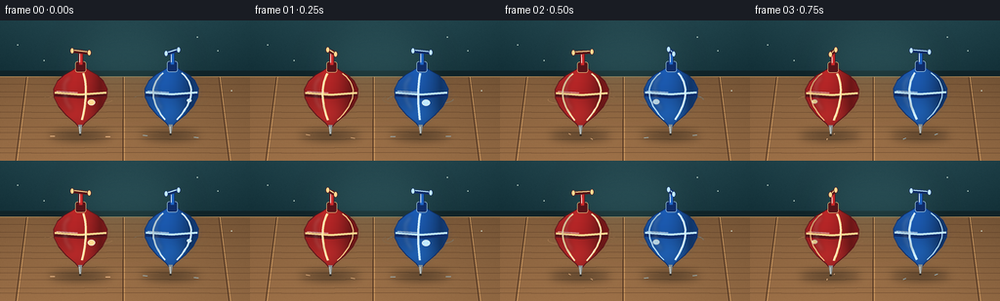
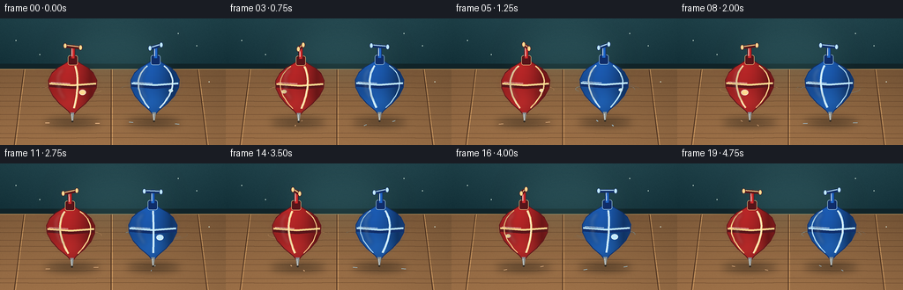

CODING AGENTS AS PIXEL WORLD MODELS
traex/GPT-5.6-Sol · instance_preservation_0038
点击播放 · 原生 RGB 像素
逐轮保存的候选
回放视频、检查图与代码变化。
每份候选均可单独播放。实际图片检查记录在下方工具轨迹中。
候选 01播放与检查图
点击播放 · 原生 RGB 像素


展开代码变化
--- 上一保存版本
+++ 本次保存版本
@@ -0,0 +1,264 @@
+from pathlib import Path
+import math
+import numpy as np
+from PIL import Image, ImageDraw, ImageFilter
+import artifact_io
+
+W, H, N = 256, 144, 20
+S = 4
+WS, HS = W*S, H*S
+rng = np.random.default_rng(3817)
+
+def sc(v):
+ return int(round(v*S))
+
+def pts_scaled(points):
+ return [(sc(x), sc(y)) for x, y in points]
+
+def ellipse(draw, box, **kw):
+ draw.ellipse(tuple(sc(v) for v in box), **kw)
+
+def line(draw, points, **kw):
+ if 'width' in kw:
+ kw['width'] = sc(kw['width'])
+ draw.line(pts_scaled(points), **kw)
+
+def polygon(draw, points, **kw):
+ draw.polygon(pts_scaled(points), **kw)
+
+def rounded_rectangle(draw, box, radius, **kw):
+ draw.rounded_rectangle(tuple(sc(v) for v in box), radius=sc(radius), **kw)
+
+def make_background():
+ yy, xx = np.mgrid[0:HS, 0:WS]
+ horizon = sc(54)
+ arr = np.zeros((HS, WS, 3), dtype=np.float32)
+ wall = yy < horizon
+ # Deep teal wall, brighter around the objects.
+ vign = np.sqrt(((xx-WS*.51)/(WS*.72))**2 + ((yy-HS*.42)/(HS*.88))**2)
+ arr[...,0] = np.where(wall, 28 + 13*(1-yy/max(1,horizon)), 116)
+ arr[...,1] = np.where(wall, 58 + 18*(1-yy/max(1,horizon)), 87)
+ arr[...,2] = np.where(wall, 66 + 18*(1-yy/max(1,horizon)), 57)
+ arr[wall] -= np.clip(vign[wall]*13, 0, 13)[:,None]
+ # Warm wooden table, gently lit from upper-left.
+ t = np.clip((yy-horizon)/(HS-horizon), 0, 1)
+ arr[...,0] = np.where(wall, arr[...,0], 128 + 38*t - 12*(xx/WS))
+ arr[...,1] = np.where(wall, arr[...,1], 92 + 27*t - 8*(xx/WS))
+ arr[...,2] = np.where(wall, arr[...,2], 59 + 17*t - 5*(xx/WS))
+ arr *= np.clip(1.08-vign[...,None]*.16, .76, 1.05)
+ # Fixed, subtle texture so animation remains clean and camera-static.
+ noise_small = rng.normal(0, 1.1, (H, W, 1)).astype(np.float32)
+ noise = np.array(Image.fromarray(np.uint8(np.clip(noise_small[...,0]+128,0,255))).resize((WS,HS), Image.Resampling.BICUBIC), dtype=np.float32)-128
+ arr += noise[...,None]*.55
+ return Image.fromarray(np.uint8(np.clip(arr,0,255)), 'RGB').convert('RGBA')
+
+BG = make_background()
+# Add stable environmental details.
+bgd = ImageDraw.Draw(BG, 'RGBA')
+# Horizon trim and reflected light.
+rounded_rectangle(bgd, (0, 51.5, 256, 57.5), 0, fill=(16,35,40,135))
+line(bgd, [(0,57.5),(256,57.5)], fill=(231,181,111,50), width=.6)
+# Wall vignette / soft decorative light pool.
+light = Image.new('RGBA', (WS,HS), (0,0,0,0))
+ld = ImageDraw.Draw(light,'RGBA')
+ellipse(ld, (61,2,197,82), fill=(103,167,158,28))
+light = light.filter(ImageFilter.GaussianBlur(sc(17)))
+BG = Image.alpha_composite(BG, light)
+bgd = ImageDraw.Draw(BG,'RGBA')
+# Fine wood seams and grain.
+for x in (27, 126, 224):
+ line(bgd, [(x,58),(x+(x-128)*.11,144)], fill=(66,41,26,80), width=.7)
+ line(bgd, [(x+1,58),(x+(x-128)*.11+1.5,144)], fill=(235,178,111,22), width=.5)
+for k in range(11):
+ y = 65 + k*7.15
+ wob = 1.1*math.sin(k*2.3)
+ line(bgd, [(0,y+wob),(64,y+.4+wob),(132,y-.3+wob),(256,y+.5+wob)], fill=(74,47,29,24), width=.45)
+# Tiny background speckles.
+for x,y,a in [(18,25,28),(223,31,18),(202,17,18),(45,41,16),(237,72,15)]:
+ ellipse(bgd,(x-0.5,y-0.5,x+0.5,y+0.5),fill=(220,240,226,a))
+
+# Object body profile: y relative to top origin and half-width.
+PROFILE = [(48,5.5),(51,10),(55,17),(61,23.5),(69,27.5),(78,27),(87,22.5),(96,14.5),(104,5),(108,1.7)]
+
+def interp_width(y):
+ for (y0,w0),(y1,w1) in zip(PROFILE[:-1],PROFILE[1:]):
+ if y0 <= y <= y1:
+ q=(y-y0)/(y1-y0)
+ return w0*(1-q)+w1*q
+ return PROFILE[0][1] if y<PROFILE[0][0] else PROFILE[-1][1]
+
+def center_at(cx, lean, y):
+ # tip is the pivot, upper body circles slightly during precession
+ return cx + lean*(108-y)/60.0
+
+def body_polygon(cx, oy, lean):
+ left=[(center_at(cx,lean,y)-w,oy+y) for y,w in PROFILE]
+ right=[(center_at(cx,lean,y)+w,oy+y) for y,w in reversed(PROFILE)]
+ return left+right
+
+def add_shadow(canvas, cx, ground_y, squash, strength=95):
+ sh=Image.new('RGBA',(WS,HS),(0,0,0,0)); d=ImageDraw.Draw(sh,'RGBA')
+ ellipse(d,(cx-31*squash,ground_y-5,cx+31*squash,ground_y+5),fill=(20,20,16,strength))
+ ellipse(d,(cx-16*squash,ground_y-2.2,cx+16*squash,ground_y+2.3),fill=(15,14,11,strength+30))
+ sh=sh.filter(ImageFilter.GaussianBlur(sc(4.2)))
+ canvas.alpha_composite(sh)
+
+
+def draw_speed_arcs(canvas, cx, cy, phase, color):
+ lay=Image.new('RGBA',(WS,HS),(0,0,0,0)); d=ImageDraw.Draw(lay,'RGBA')
+ # Two broken elliptical orbit strokes; rotating start positions make motion explicit.
+ for rad, alpha, width, off in [(34,70,1.15,0),(39,34,.75,145)]:
+ box=tuple(sc(v) for v in (cx-rad,cy-rad*.18,cx+rad,cy+rad*.18))
+ st=(math.degrees(phase)*.72+off)%360
+ d.arc(box,start=st,end=st+64,fill=(*color,alpha),width=sc(width))
+ d.arc(box,start=st+178,end=st+220,fill=(*color,max(12,alpha-20)),width=sc(max(.5,width-.2)))
+ lay=lay.filter(ImageFilter.GaussianBlur(sc(.22)))
+ canvas.alpha_composite(lay)
+
+
+def draw_top(canvas, cx, oy, phase, scheme, lean, spin_dir):
+ base, dark, bright, accent = scheme
+ poly=body_polygon(cx,oy,lean)
+ mask=Image.new('L',(WS,HS),0); md=ImageDraw.Draw(mask)
+ polygon(md,poly,fill=255)
+
+ # Soft rotational ghost at the sides (motion blur), behind main top.
+ ghost=Image.new('RGBA',(WS,HS),(0,0,0,0)); gd=ImageDraw.Draw(ghost,'RGBA')
+ for dx, a in [(-2.0,16),(2.0,16)]:
+ gp=[(x+dx,y) for x,y in poly]
+ polygon(gd,gp,fill=(*bright,a))
+ ghost=ghost.filter(ImageFilter.GaussianBlur(sc(2.0)))
+ canvas.alpha_composite(ghost)
+
+ # Curved 3D body shading clipped by silhouette.
+ layer=np.zeros((HS,WS,4),dtype=np.uint8)
+ m=np.asarray(mask)/255.0
+ y0=sc(oy+46); y1=sc(oy+109)
+ for x in range(max(0,sc(cx-31)),min(WS,sc(cx+31))):
+ xn=(x/S-cx)/29.0
+ # Fixed studio key light from upper left, plus crisp right rim.
+ shade=.54 + .38*np.clip(1-(xn+.28)**2,0,1) + .11*np.clip((xn-.68)*3,0,1)
+ col=np.array(base)*shade
+ layer[:,x,:3]=np.clip(col,0,255)
+ # modest vertical shape shading
+ ycoords=np.arange(HS)[:,None]/S
+ vert=1-.12*np.clip((ycoords-(oy+48))/62,0,1)
+ layer[:,:,:3]=np.clip(layer[:,:,:3].astype(float)*vert[:,:,None],0,255)
+ layer[:,:,3]=np.uint8(m*255)
+ canvas.alpha_composite(Image.fromarray(layer,'RGBA'))
+
+ # Colored lower reflected glow, clipped.
+ glow=Image.new('RGBA',(WS,HS),(0,0,0,0)); g=ImageDraw.Draw(glow,'RGBA')
+ ellipse(g,(cx-25,oy+78,cx+24,oy+111),fill=(*bright,45))
+ glow=glow.filter(ImageFilter.GaussianBlur(sc(8)))
+ glow.putalpha(Image.composite(glow.getchannel('A'),Image.new('L',(WS,HS),0),mask))
+ canvas.alpha_composite(glow)
+
+ d=ImageDraw.Draw(canvas,'RGBA')
+ # Equatorial metal/accent band follows body, with split highlights.
+ line(d,[(center_at(cx,lean,75)-26.6,oy+75),(center_at(cx,lean,75),oy+77.1),(center_at(cx,lean,75)+26.4,oy+75)],fill=(*dark,175),width=4.1)
+ line(d,[(center_at(cx,lean,73)-26.4,oy+73),(center_at(cx,lean,73),oy+75),(center_at(cx,lean,73)+26.4,oy+73)],fill=(*accent,220),width=2.25)
+ line(d,[(center_at(cx,lean,71)-24.5,oy+71.4),(center_at(cx,lean,71)-3,oy+72.9)],fill=(255,255,245,105),width=.8)
+
+ # Rotating longitudinal inlay/rib. Projection moves left/right with phase.
+ # Only front-facing ribs are strong, far-side ribs become glancing rim marks.
+ for off in (0,2*math.pi/3,4*math.pi/3):
+ th=phase+off
+ depth=math.cos(th)
+ rib=[]
+ for y in np.linspace(53,101,18):
+ r=interp_width(float(y))*0.82
+ x=center_at(cx,lean,float(y))+r*math.sin(th)
+ rib.append((x,oy+y))
+ if depth > -0.15:
+ alpha=int(55+155*max(0,depth))
+ line(d,rib,fill=(*accent,alpha),width=1.1+1.25*max(0,depth))
+ if depth>.45:
+ line(d,[(x-.55,y) for x,y in rib],fill=(255,255,249,int(80*depth)),width=.48)
+
+ # A rotating round crest makes each frame's spin phase unambiguous.
+ th=phase+.42
+ dep=math.cos(th)
+ if dep>-0.18:
+ ex=center_at(cx,lean,81)+18.3*math.sin(th)
+ ey=oy+81+2.6*dep
+ ew=2.2+2.0*max(0,dep)
+ ellipse(d,(ex-ew,ey-ew*.78,ex+ew,ey+ew*.78),fill=(*accent,int(85+150*max(0,dep))),outline=(255,255,248,int(110*max(0,dep))),width=sc(.55))
+
+ # Body outline and glossy highlight.
+ line(d,poly+[poly[0]],fill=(*dark,180),width=.75)
+ hi=Image.new('RGBA',(WS,HS),(0,0,0,0)); hd=ImageDraw.Draw(hi,'RGBA')
+ line(hd,[(center_at(cx,lean,56)-11,oy+56),(center_at(cx,lean,64)-17,oy+64),(center_at(cx,lean,82)-15,oy+82),(center_at(cx,lean,91)-9,oy+91)],fill=(255,250,237,82),width=3.2)
+ hi=hi.filter(ImageFilter.GaussianBlur(sc(2.3)))
+ hi.putalpha(Image.composite(hi.getchannel('A'),Image.new('L',(WS,HS),0),mask))
+ canvas.alpha_composite(hi)
+
+ d=ImageDraw.Draw(canvas,'RGBA')
+ # Neck and spindle.
+ nc=center_at(cx,lean,48)
+ rounded_rectangle(d,(nc-5.4,oy+41,nc+5.5,oy+52),2.3,fill=(*dark,255),outline=(*accent,130),width=sc(.55))
+ rounded_rectangle(d,(nc-2.35,oy+29,nc+2.4,oy+45),1.2,fill=(*base,255),outline=(*dark,230),width=sc(.65))
+ line(d,[(nc-1.1,oy+30.5),(nc-1,oy+42)],fill=(255,255,245,90),width=.7)
+
+ # Rotating winding key / wing: perspective foreshortening changes each frame.
+ wingang=phase*spin_dir + .2
+ projected=math.sqrt(.08+math.cos(wingang)**2)
+ half=9.3*projected
+ yskew=2.4*math.sin(wingang)
+ # blurred sweep from previous angular position
+ blur=Image.new('RGBA',(WS,HS),(0,0,0,0)); bd=ImageDraw.Draw(blur,'RGBA')
+ line(bd,[(nc-half-2,oy+31-yskew),(nc+half+2,oy+31+yskew)],fill=(*accent,55),width=3.4)
+ blur=blur.filter(ImageFilter.GaussianBlur(sc(1.5))); canvas.alpha_composite(blur)
+ d=ImageDraw.Draw(canvas,'RGBA')
+ line(d,[(nc-half,oy+31-yskew),(nc+half,oy+31+yskew)],fill=(*dark,255),width=4.1)
+ line(d,[(nc-half+.5,oy+30.25-yskew),(nc+half-.5,oy+30.25+yskew)],fill=(*accent,220),width=1.35)
+ ellipse(d,(nc-half-2,oy+28-yskew,nc-half+2,oy+34-yskew),fill=(*accent,235),outline=(*dark,210),width=sc(.5))
+ ellipse(d,(nc+half-2,oy+28+yskew,nc+half+2,oy+34+yskew),fill=(*accent,235),outline=(*dark,210),width=sc(.5))
+
+ # Steel tip at floor.
+ tc=center_at(cx,lean,108)
+ polygon(d,[(tc-2.1,oy+106),(tc+2.1,oy+106),(tc+.65,oy+116),(tc-.65,oy+116)],fill=(137,145,146,255))
+ line(d,[(tc-.7,oy+108),(tc-.25,oy+115)],fill=(255,255,244,165),width=.55)
+ ellipse(d,(tc-1.25,oy+115.2,tc+1.25,oy+117),fill=(47,40,32,175))
+
+
+def render_frame(i):
+ t=i/(N-1)
+ canvas=BG.copy()
+ # Ground points remain nearly fixed; body centers precess without crossing.
+ red_cx=82 + .65*math.sin(2*math.pi*t*1.12)
+ blue_cx=174 + .62*math.sin(2*math.pi*t*1.06+1.5)
+ red_oy=1.0 + .45*math.sin(2*math.pi*t*2.0)
+ blue_oy=0.5 + .38*math.sin(2*math.pi*t*1.8+1.1)
+ rphase=i*math.radians(83)+.25
+ bphase=-i*math.radians(71)+1.1
+ rlean=2.4*math.sin(2*math.pi*t*1.15+.2)
+ blean=2.0*math.sin(2*math.pi*t*1.08+2.1)
+
+ # Persistent shadows anchor each separate instance.
+ add_shadow(canvas,82,118.2,1.0,92)
+ add_shadow(canvas,174,117.9,.96,92)
+ # Motion lines behind the bodies.
+ draw_speed_arcs(canvas,red_cx,red_oy+80,rphase,(255,189,129))
+ draw_speed_arcs(canvas,blue_cx,blue_oy+80,bphase,(131,214,255))
+
+ red=((205,43,44),(87,20,25),(244,73,66),(255,220,147))
+ blue=((31,101,197),(15,45,105),(57,151,244),(194,234,255))
+ draw_top(canvas,red_cx,red_oy,rphase,red,rlean,1)
+ draw_top(canvas,blue_cx,blue_oy,bphase,blue,blean,-1)
+
+ # Contact glints and a few short floor-skimming speed strokes.
+ d=ImageDraw.Draw(canvas,'RGBA')
+ for cx, ph, col in [(red_cx,rphase,(255,201,150)),(blue_cx,bphase,(164,221,255))]:
+ for q in (0,math.pi):
+ a=ph*.37+q
+ x0=cx+26*math.cos(a)
+ y0=119+2.2*math.sin(a)
+ line(d,[(x0,y0),(x0+5*math.cos(a),y0+1.1*math.sin(a))],fill=(*col,55),width=.7)
+ # Downsample creates clean antialiasing.
+ out=canvas.convert('RGB').resize((W,H),Image.Resampling.LANCZOS)
+ return np.asarray(out,dtype=np.uint8)
+
+frames=np.stack([render_frame(i) for i in range(N)],axis=0)
+artifact_io.save(frames,Path(__file__).resolve().parent)
+print('saved',frames.shape,frames.dtype)
可观测工具轨迹
实际执行的命令与返回图片。
命令 1exit 0
/bin/bash -lc "cat prompt.txt && printf '\\n---RULES---\\n' && cat GENERATION_RULES.md && printf '\\n---SPEC---\\n' && cat task_spec.json"
命令 2exit 0
/bin/bash -lc "find . -maxdepth 2 -type f -printf '%p\\n' | sort"
命令 3exit 0
/bin/bash -lc 'cat artifact_io.py'
命令 4exit 0
/bin/bash -lc "cat > generate.py <<'PY'
from pathlib import Path
import math
import numpy as np
from PIL import Image, ImageDraw, ImageFilter
import artifact_io
W, H, N = 256, 144, 20
S = 4
WS, HS = W*S, H*S
rng = np.random.default_rng(3817)
def sc(v):
return int(round(v*S))
def pts_scaled(points):
return [(sc(x), sc(y)) for x, y in points]
def ellipse(draw, box, **kw):
draw.ellipse(tuple(sc(v) for v in box), **kw)
def line(draw, points, **kw):
if 'width' in kw:
kw['width'] = sc(kw['width'])
draw.line(pts_scaled(points), **kw)
def polygon(draw, points, **kw):
draw.polygon(pts_scaled(points), **kw)
def rounded_rectangle(draw, box, radius, **kw):
draw.rounded_rectangle(tuple(sc(v) for v in box), radius=sc(radius), **kw)
def make_background():
yy, xx = np.mgrid[0:HS, 0:WS]
horizon = sc(54)
arr = np.zeros((HS, WS, 3), dtype=np.float32)
wall = yy < horizon
# Deep teal wall, brighter around the objects.
vign = np.sqrt(((xx-WS*.51)/(WS*.72))**2 + ((yy-HS*.42)/(HS*.88))**2)
arr[...,0] = np.where(wall, 28 + 13*(1-yy/max(1,horizon)), 116)
arr[...,1] = np.where(wall, 58 + 18*(1-yy/max(1,horizon)), 87)
arr[...,2] = np.where(wall, 66 + 18*(1-yy/max(1,horizon)), 57)
arr[wall] -= np.clip(vign[wall]*13, 0, 13)[:,None]
# Warm wooden table, gently lit from upper-left.
t = np.clip((yy-horizon)/(HS-horizon), 0, 1)
arr[...,0] = np.where(wall, arr[...,0], 128 + 38*t - 12*(xx/WS))
arr[...,1] = np.where(wall, arr[...,1], 92 + 27*t - 8*(xx/WS))
arr[...,2] = np.where(wall, arr[...,2], 59 + 17*t - 5*(xx/WS))
arr *= np.clip(1.08-vign[...,None]*.16, .76, 1.05)
# Fixed, subtle texture so animation remains clean and camera-static.
noise_small = rng.normal(0, 1.1, (H, W, 1)).astype(np.float32)
noise = np.array(Image.fromarray(np.uint8(np.clip(noise_small[...,0]+128,0,255))).resize((WS,HS), Image.Resampling.BICUBIC), dtype=np.float32)-128
arr += noise[...,None]*.55
return Image.fromarray(np.uint8(np.clip(arr,0,255)), 'RGB').convert('RGBA')
BG = make_background()
# Add stable environmental details.
bgd = ImageDraw.Draw(BG, 'RGBA')
# Horizon trim and reflected light.
rounded_rectangle(bgd, (0, 51.5, 256, 57.5), 0, fill=(16,35,40,135))
line(bgd, [(0,57.5),(256,57.5)], fill=(231,181,111,50), width=.6)
# Wall vignette / soft decorative light pool.
light = Image.new('RGBA', (WS,HS), (0,0,0,0))
ld = ImageDraw.Draw(light,'RGBA')
ellipse(ld, (61,2,197,82), fill=(103,167,158,28))
light = light.filter(ImageFilter.GaussianBlur(sc(17)))
BG = Image.alpha_composite(BG, light)
bgd = ImageDraw.Draw(BG,'RGBA')
# Fine wood seams and grain.
for x in (27, 126, 224):
line(bgd, [(x,58),(x+(x-128)*.11,144)], fill=(66,41,26,80), width=.7)
line(bgd, [(x+1,58),(x+(x-128)*.11+1.5,144)], fill=(235,178,111,22), width=.5)
for k in range(11):
y = 65 + k*7.15
wob = 1.1*math.sin(k*2.3)
line(bgd, [(0,y+wob),(64,y+.4+wob),(132,y-.3+wob),(256,y+.5+wob)], fill=(74,47,29,24), width=.45)
# Tiny background speckles.
for x,y,a in [(18,25,28),(223,31,18),(202,17,18),(45,41,16),(237,72,15)]:
ellipse(bgd,(x-0.5,y-0.5,x+0.5,y+0.5),fill=(220,240,226,a))
# Object body profile: y relative to top origin and half-width.
PROFILE = [(48,5.5),(51,10),(55,17),(61,23.5),(69,27.5),(78,27),(87,22.5),(96,14.5),(104,5),(108,1.7)]
def interp_width(y):
for (y0,w0),(y1,w1) in zip(PROFILE[:-1],PROFILE[1:]):
if y0 <= y <= y1:
q=(y-y0)/(y1-y0)
return w0*(1-q)+w1*q
return PROFILE[0][1] if y<PROFILE[0][0] else PROFILE[-1][1]
def center_at(cx, lean, y):
# tip is the pivot, upper body circles slightly during precession
return cx + lean*(108-y)/60.0
def body_polygon(cx, oy, lean):
left=[(center_at(cx,lean,y)-w,oy+y) for y,w in PROFILE]
right=[(center_at(cx,lean,y)+w,oy+y) for y,w in reversed(PROFILE)]
return left+right
def add_shadow(canvas, cx, ground_y, squash, strength=95):
sh=Image.new('RGBA',(WS,HS),(0,0,0,0)); d=ImageDraw.Draw(sh,'RGBA')
ellipse(d,(cx-31*squash,ground_y-5,cx+31*squash,ground_y+5),fill=(20,20,16,strength))
ellipse(d,(cx-16*squash,ground_y-2.2,cx+16*squash,ground_y+2.3),fill=(15,14,11,strength+30))
sh=sh.filter(ImageFilter.GaussianBlur(sc(4.2)))
canvas.alpha_composite(sh)
def draw_speed_arcs(canvas, cx, cy, phase, color):
lay=Image.new('RGBA',(WS,HS),(0,0,0,0)); d=ImageDraw.Draw(lay,'RGBA')
# Two broken elliptical orbit strokes; rotating start positions make motion explicit.
for rad, alpha, width, off in [(34,70,1.15,0),(39,34,.75,145)]:
box=tuple(sc(v) for v in (cx-rad,cy-rad*.18,cx+rad,cy+rad*.18))
st=(math.degrees(phase)*.72+off)%360
d.arc(box,start=st,end=st+64,fill=(*color,alpha),width=sc(width))
d.arc(box,start=st+178,end=st+220,fill=(*color,max(12,alpha-20)),width=sc(max(.5,width-.2)))
lay=lay.filter(ImageFilter.GaussianBlur(sc(.22)))
canvas.alpha_composite(lay)
def draw_top(canvas, cx, oy, phase, scheme, lean, spin_dir):
base, dark, bright, accent = scheme
poly=body_polygon(cx,oy,lean)
mask=Image.new('L',(WS,HS),0); md=ImageDraw.Draw(mask)
polygon(md,poly,fill=255)
# Soft rotational ghost at the sides (motion blur), behind main top.
ghost=Image.new('RGBA',(WS,HS),(0,0,0,0)); gd=ImageDraw.Draw(ghost,'RGBA')
for dx, a in [(-2.0,16),(2.0,16)]:
gp=[(x+dx,y) for x,y in poly]
polygon(gd,gp,fill=(*bright,a))
ghost=ghost.filter(ImageFilter.GaussianBlur(sc(2.0)))
canvas.alpha_composite(ghost)
# Curved 3D body shading clipped by silhouette.
layer=np.zeros((HS,WS,4),dtype=np.uint8)
m=np.asarray(mask)/255.0
y0=sc(oy+46); y1=sc(oy+109)
for x in range(max(0,sc(cx-31)),min(WS,sc(cx+31))):
xn=(x/S-cx)/29.0
# Fixed studio key light from upper left, plus crisp right rim.
shade=.54 + .38*np.clip(1-(xn+.28)**2,0,1) + .11*np.clip((xn-.68)*3,0,1)
col=np.array(base)*shade
layer[:,x,:3]=np.clip(col,0,255)
# modest vertical shape shading
ycoords=np.arange(HS)[:,None]/S
vert=1-.12*np.clip((ycoords-(oy+48))/62,0,1)
layer[:,:,:3]=np.clip(layer[:,:,:3].astype(float)*vert[:,:,None],0,255)
layer[:,:,3]=np.uint8(m*255)
canvas.alpha_composite(Image.fromarray(layer,'RGBA'))
# Colored lower reflected glow, clipped.
glow=Image.new('RGBA',(WS,HS),(0,0,0,0)); g=ImageDraw.Draw(glow,'RGBA')
ellipse(g,(cx-25,oy+78,cx+24,oy+111),fill=(*bright,45))
glow=glow.filter(ImageFilter.GaussianBlur(sc(8)))
glow.putalpha(Image.composite(glow.getchannel('A'),Image.new('L',(WS,HS),0),mask))
canvas.alpha_composite(glow)
d=ImageDraw.Draw(canvas,'RGBA')
# Equatorial metal/accent band follows body, with split highlights.
line(d,[(center_at(cx,lean,75)-26.6,oy+75),(center_at(cx,lean,75),oy+77.1),(center_at(cx,lean,75)+26.4,oy+75)],fill=(*dark,175),width=4.1)
line(d,[(center_at(cx,lean,73)-26.4,oy+73),(center_at(cx,lean,73),oy+75),(center_at(cx,lean,73)+26.4,oy+73)],fill=(*accent,220),width=2.25)
line(d,[(center_at(cx,lean,71)-24.5,oy+71.4),(center_at(cx,lean,71)-3,oy+72.9)],fill=(255,255,245,105),width=.8)
# Rotating longitudinal inlay/rib. Projection moves left/right with phase.
# Only front-facing ribs are strong, far-side ribs become glancing rim marks.
for off in (0,2*math.pi/3,4*math.pi/3):
th=phase+off
depth=math.cos(th)
rib=[]
for y in np.linspace(53,101,18):
r=interp_width(float(y))*0.82
x=center_at(cx,lean,float(y))+r*math.sin(th)
rib.append((x,oy+y))
if depth > -0.15:
alpha=int(55+155*max(0,depth))
line(d,rib,fill=(*accent,alpha),width=1.1+1.25*max(0,depth))
if depth>.45:
line(d,[(x-.55,y) for x,y in rib],fill=(255,255,249,int(80*depth)),width=.48)
# A rotating round crest makes each frame's spin phase unambiguous.
th=phase+.42
dep=math.cos(th)
if dep>-0.18:
ex=center_at(cx,lean,81)+18.3*math.sin(th)
ey=oy+81+2.6*dep
ew=2.2+2.0*max(0,dep)
ellipse(d,(ex-ew,ey-ew*.78,ex+ew,ey+ew*.78),fill=(*accent,int(85+150*max(0,dep))),outline=(255,255,248,int(110*max(0,dep))),width=sc(.55))
# Body outline and glossy highlight.
line(d,poly+[poly[0]],fill=(*dark,180),width=.75)
hi=Image.new('RGBA',(WS,HS),(0,0,0,0)); hd=ImageDraw.Draw(hi,'RGBA')
line(hd,[(center_at(cx,lean,56)-11,oy+56),(center_at(cx,lean,64)-17,oy+64),(center_at(cx,lean,82)-15,oy+82),(center_at(cx,lean,91)-9,oy+91)],fill=(255,250,237,82),width=3.2)
hi=hi.filter(ImageFilter.GaussianBlur(sc(2.3)))
hi.putalpha(Image.composite(hi.getchannel('A'),Image.new('L',(WS,HS),0),mask))
canvas.alpha_composite(hi)
d=ImageDraw.Draw(canvas,'RGBA')
# Neck and spindle.
nc=center_at(cx,lean,48)
rounded_rectangle(d,(nc-5.4,oy+41,nc+5.5,oy+52),2.3,fill=(*dark,255),outline=(*accent,130),width=sc(.55))
rounded_rectangle(d,(nc-2.35,oy+29,nc+2.4,oy+45),1.2,fill=(*base,255),outline=(*dark,230),width=sc(.65))
line(d,[(nc-1.1,oy+30.5),(nc-1,oy+42)],fill=(255,255,245,90),width=.7)
# Rotating winding key / wing: perspective foreshortening changes each frame.
wingang=phase*spin_dir + .2
projected=math.sqrt(.08+math.cos(wingang)**2)
half=9.3*projected
yskew=2.4*math.sin(wingang)
# blurred sweep from previous angular position
blur=Image.new('RGBA',(WS,HS),(0,0,0,0)); bd=ImageDraw.Draw(blur,'RGBA')
line(bd,[(nc-half-2,oy+31-yskew),(nc+half+2,oy+31+yskew)],fill=(*accent,55),width=3.4)
blur=blur.filter(ImageFilter.GaussianBlur(sc(1.5))); canvas.alpha_composite(blur)
d=ImageDraw.Draw(canvas,'RGBA')
line(d,[(nc-half,oy+31-yskew),(nc+half,oy+31+yskew)],fill=(*dark,255),width=4.1)
line(d,[(nc-half+.5,oy+30.25-yskew),(nc+half-.5,oy+30.25+yskew)],fill=(*accent,220),width=1.35)
ellipse(d,(nc-half-2,oy+28-yskew,nc-half+2,oy+34-yskew),fill=(*accent,235),outline=(*dark,210),width=sc(.5))
ellipse(d,(nc+half-2,oy+28+yskew,nc+half+2,oy+34+yskew),fill=(*accent,235),outline=(*dark,210),width=sc(.5))
# Steel tip at floor.
tc=center_at(cx,lean,108)
polygon(d,[(tc-2.1,oy+106),(tc+2.1,oy+106),(tc+.65,oy+116),(tc-.65,oy+116)],fill=(137,145,146,255))
line(d,[(tc-.7,oy+108),(tc-.25,oy+115)],fill=(255,255,244,165),width=.55)
ellipse(d,(tc-1.25,oy+115.2,tc+1.25,oy+117),fill=(47,40,32,175))
def render_frame(i):
t=i/(N-1)
canvas=BG.copy()
# Ground points remain nearly fixed; body centers precess without crossing.
red_cx=82 + .65*math.sin(2*math.pi*t*1.12)
blue_cx=174 + .62*math.sin(2*math.pi*t*1.06+1.5)
red_oy=1.0 + .45*math.sin(2*math.pi*t*2.0)
blue_oy=0.5 + .38*math.sin(2*math.pi*t*1.8+1.1)
rphase=i*math.radians(83)+.25
bphase=-i*math.radians(71)+1.1
rlean=2.4*math.sin(2*math.pi*t*1.15+.2)
blean=2.0*math.sin(2*math.pi*t*1.08+2.1)
# Persistent shadows anchor each separate instance.
add_shadow(canvas,82,118.2,1.0,92)
add_shadow(canvas,174,117.9,.96,92)
# Motion lines behind the bodies.
draw_speed_arcs(canvas,red_cx,red_oy+80,rphase,(255,189,129))
draw_speed_arcs(canvas,blue_cx,blue_oy+80,bphase,(131,214,255))
red=((205,43,44),(87,20,25),(244,73,66),(255,220,147))
blue=((31,101,197),(15,45,105),(57,151,244),(194,234,255))
draw_top(canvas,red_cx,red_oy,rphase,red,rlean,1)
draw_top(canvas,blue_cx,blue_oy,bphase,blue,blean,-1)
# Contact glints and a few short floor-skimming speed strokes.
d=ImageDraw.Draw(canvas,'RGBA')
for cx, ph, col in [(red_cx,rphase,(255,201,150)),(blue_cx,bphase,(164,221,255))]:
for q in (0,math.pi):
a=ph*.37+q
x0=cx+26*math.cos(a)
y0=119+2.2*math.sin(a)
line(d,[(x0,y0),(x0+5*math.cos(a),y0+1.1*math.sin(a))],fill=(*col,55),width=.7)
# Downsample creates clean antialiasing.
out=canvas.convert('RGB').resize((W,H),Image.Resampling.LANCZOS)
return np.asarray(out,dtype=np.uint8)
frames=np.stack([render_frame(i) for i in range(N)],axis=0)
artifact_io.save(frames,Path(__file__).resolve().parent)
print('saved',frames.shape,frames.dtype)
PY
python generate.py"命令 5exit 0
/bin/bash -lc "python - <<'PY'
import numpy as np
from pathlib import Path
z=np.load('pixels.npz')['pixels']
assert z.shape==(144,256,20)
frames=z.transpose(2,0,1)
print('shape',z.shape,'unique_frames',len({f.tobytes() for f in frames}))
print('artifacts',[(p.name,p.stat().st_size) for p in map(Path,['pixels.npz','index.html','inspection.png','transition_check.png'])])
PY"视觉工具实际返回图片 1

视觉工具实际返回图片 2

保存候选 1 份；完成命令 5 次；可验证图片返回 2 张。原始 API 响应与完整日志保留在本地。